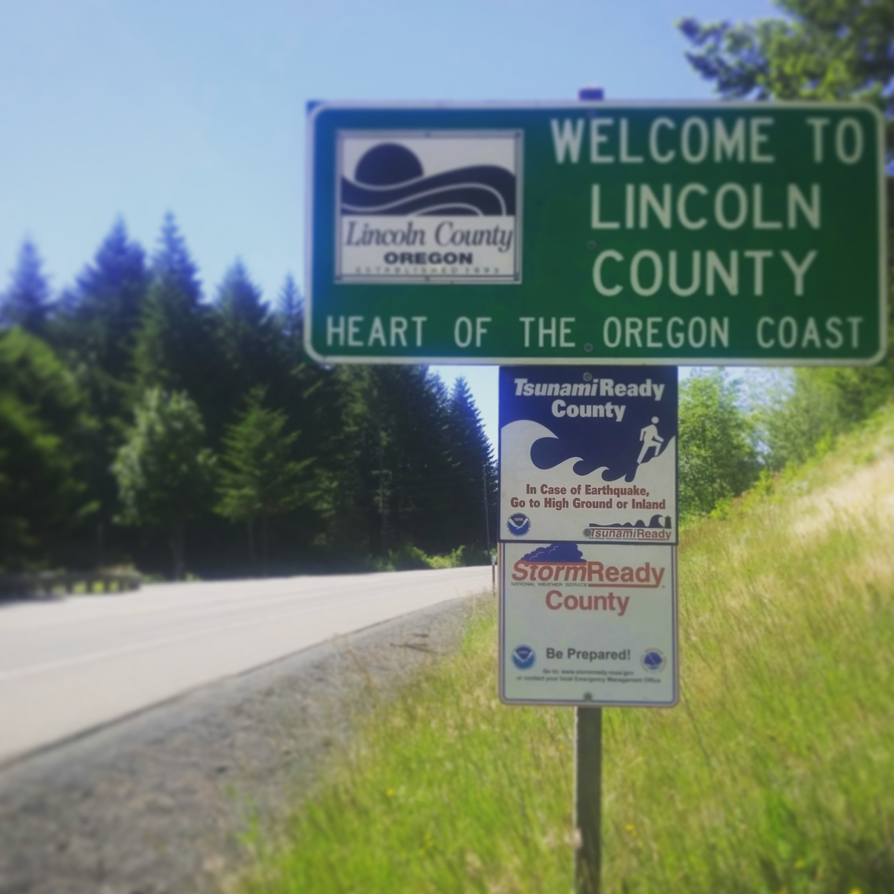
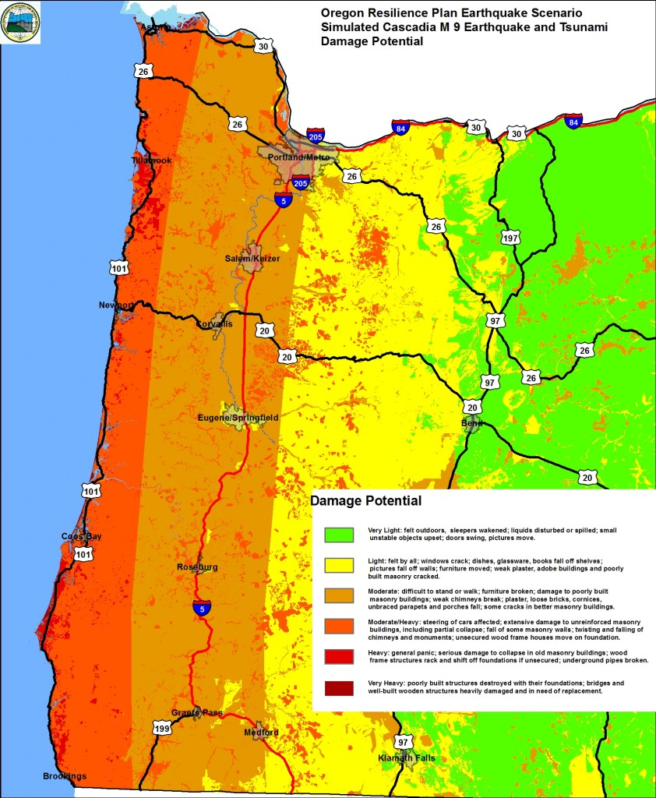
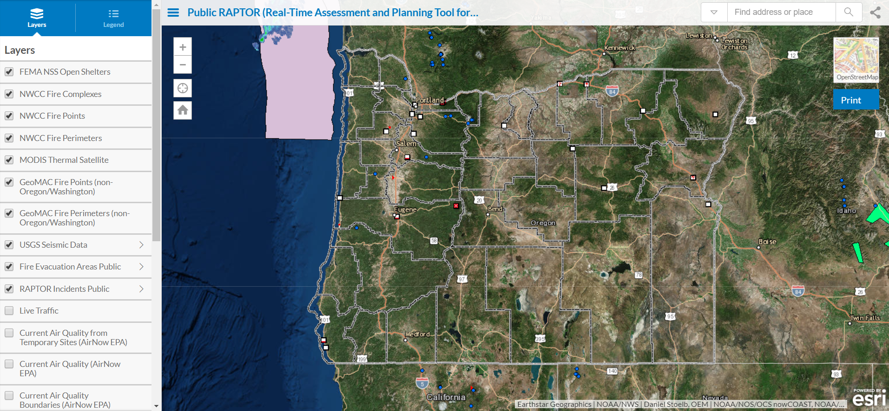
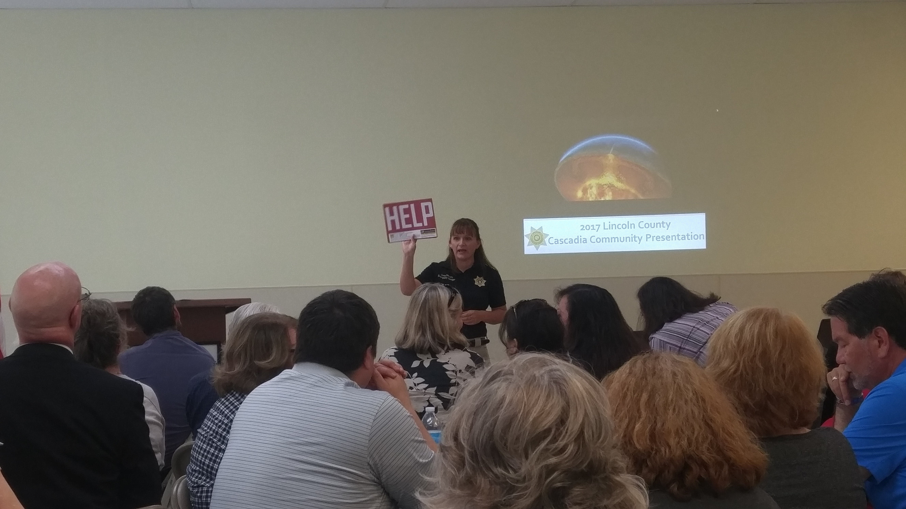
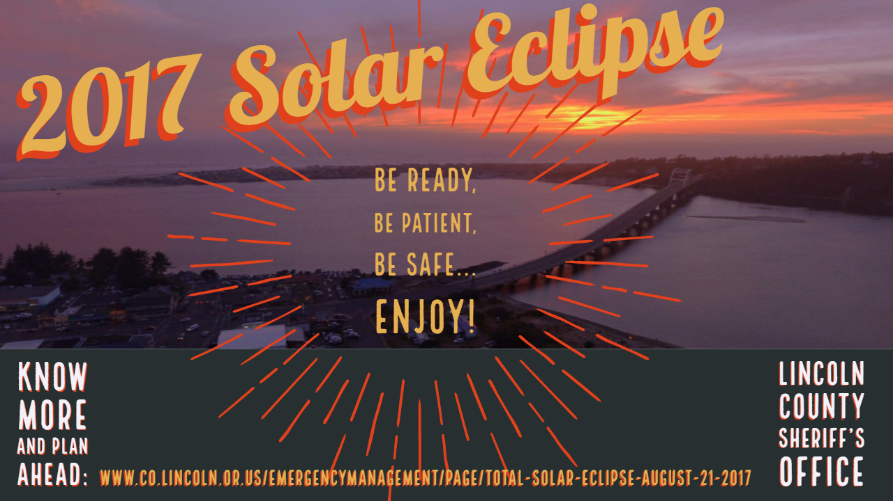

Welcome to Lincoln County, Intern.

Density: 47/mi2
Population: 47,038 (2015)
Lincoln County Emergency Management
Preceptor: Jenny Demaris | LCSO Emergency Manager
"How is your research and work directly impacting the end users and implementers?"
Scope of Service and Response
Lincoln County Emergency Management: the local response with a big responsibility.
Preparedness Priorities
Lincoln County's Natural, Manmade, Technological, and Health Related Hazards
Preparedness information linked for each hazard, sourced from Lincoln County Emergency Management and Ready.gov
- Active Shooter
- Bioterrorism
- Chemical Emergencies
- Cyber Security
- Drought
- Earthquakes
- Explosions
- Extreme Heat
- Flooding and River Levels
- Hazardous Materials Incidents
- Home Fires
- Household Chemical Emergencies
- Landslides & Debris Flow
- Nuclear Blast
- Pandemic
- Power Outages
- Radiological Dispersion Device
- Severe Weather
- Snowstorms & Extreme Cold
- Space Weather
- Thunderstorms & Lightning
Cascadia Hazard Mapping
The local tsunami zone (right)
Cascadia Earthquake and Tsunami Potential (below)
image
source:Oregon Resilience Plan , 2013
"The Biggest, Little EOC"
While the day-to-day duties were based in the Emergency Operations Center (EOC), engaging the community and training opprotunities often requires on-location events.
This map describes the different locations of events that happened during my internship. Click the marker to see different events.
Duties and Events
1. Critical Infrastructure GIS data Update using Real-Time Assessment and Planning Tool for Oregon RAPTOR
2. Assist Emergency Manager in Community Outreach and event set up
3. Social Media Support
Applicable OSU Courses
Geog 595 Field Geography of Oregon, Dr. Aaron Wolf: My first exposure to Oregon's beautifully dangerous topography
H 547 GIS and Public Health, Dr. Perry Hystad: Learning to create health communication assets with data and maps.
H 589 Emergency and Disaster Management, Anthony Veltri, Ed.D, CSHM: Understanding the private entity perspective in Emergency Management
PAC 325 ALI Wilderness First Aid
Meeting Core Competencies
- Design and manage health development programs considering health, social, political,
cultural, and environmental factors.
I was involved in the update of LSCO and OHA’s critical infrastructure GIS Data update, which
requires a strong understanding and critical thinking regarding the multiple health,
political, geographical, cultural and environmental components.
- Work in, and adapt to, any global context for health development.
While this is a local opportunity, the opportunity is unlike anywhere in the world.
Oregon boasts some of the most current and finest disaster management professionals and
research in the world.
Earthquakes happen everyday globally and disaster management is a skill set that teaches
planning and flexibility and adaptation that can be applied to most global settings.
- Integrate global, political, economic, and cultural systems knowledge into health
development.
The Cascadia event this project is focused on has ramifications for areas outside of Oregon
across the Pacific Ocean that require a global context.
Emergency Management has many financial considerations and is vulnerable to the caprices of
the current political systems.
- Develop a disciplinary subspecialty to be applied to international health.
My unique discipline is the combination of media creation in disaster management
communication within the subspecialty of emergency management.
- Identify culturally sensitive and socio-economically appropriate strategies in health
development.
Emergency management communication directly impacts all humans in the affected area. Learning the current approaches to encompassing the diverse population was insightful to some of the core concerns of emergency Management communication.
- Design and manage health development programs in accordance to universally and locally
acceptable ethical standard.
GIS, Media, and Geovisualization are new platforms that have just begun to be implemented in
emergency management.
I was involved in the update of LSCO and OHA’s critical infrastructure GIS Data update, which requires a strong understanding and critical thinking regarding the multiple health, political, geographical, cultural and environmental components.
While this is a local opportunity, the opportunity is unlike anywhere in the world. Oregon boasts some of the most current and finest disaster management professionals and research in the world. Earthquakes happen everyday globally and disaster management is a skill set that teaches planning and flexibility and adaptation that can be applied to most global settings.
The Cascadia event this project is focused on has ramifications for areas outside of Oregon across the Pacific Ocean that require a global context. Emergency Management has many financial considerations and is vulnerable to the caprices of the current political systems.
My unique discipline is the combination of media creation in disaster management communication within the subspecialty of emergency management.
Emergency management communication directly impacts all humans in the affected area. Learning the current approaches to encompassing the diverse population was insightful to some of the core concerns of emergency Management communication.
GIS, Media, and Geovisualization are new platforms that have just begun to be implemented in emergency management.
Extra Skills Obtained


Challenges
Internship Challenges
- GIS Data- means different things to different entities
The update of the OHA’s Critical Infrastructure needed more time, bandwidth, and GIS
effort than one internship could provide.
- Fragmentation of Emergency System
So many entities, who's in charge here? While Lincoln County has strong relationships
with partners in response, many counties and other jurisdictions have friction or lack of
cohesiveness that can complicate response communication effort.
- Stigma and divide of academia and experience
The value of experience verses the value of education.
Structural Challenges
- Lack of historical emphasis on infrastructure
Lack of prepared infrastructure means additional concern for the emergency manager and is a
critical consideration for the PNW.
- Messaging is always top down and lacks empathy
Emergency Management needs an update in communication approach to encompass a more diverse
and mobile population.
Internship Challenges
The update of the OHA’s Critical Infrastructure needed more time, bandwidth, and GIS effort than one internship could provide.
So many entities, who's in charge here? While Lincoln County has strong relationships with partners in response, many counties and other jurisdictions have friction or lack of cohesiveness that can complicate response communication effort.
The value of experience verses the value of education.
Structural Challenges
Lack of prepared infrastructure means additional concern for the emergency manager and is a critical consideration for the PNW.
Emergency Management needs an update in communication approach to encompass a more diverse and mobile population.